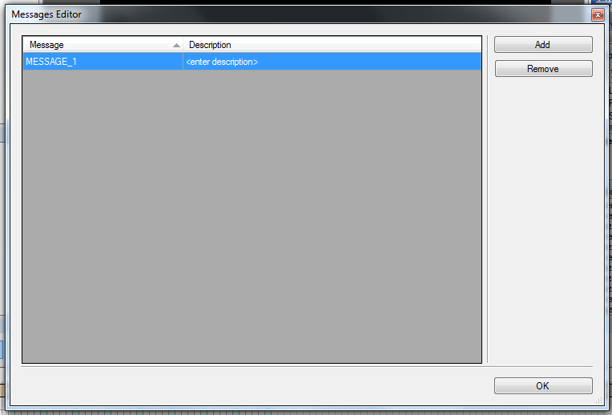

Message Actions provide a very simple mechanism of communicating to the application. An example of a message might be to show a popup message on a specific frame of animation, or poll a background process' status.
To take advantage of Message Actions you must create one or messages in the OtterUI Editor, add a Message Action to a frame of animation, and then finally process them in the application.
Create Messages in the OtterUI Editor
- From the Scene menu click Messages...
- Click Add. A new message will be created and added to the list of messages
- Double-click on the message text (in the "Message" column) and change the message text to something meaningful to your application.
Please Note: The message text will be reformatted to capitalize the message as well as to convert whitespace to underscores.
- (Optional) Enter a description for the message by double-clicking in the Description column. Enter a meaningful description of the message. This description will not be exported, but rather as a way to describe the purpose of the message and how it should be used by other users.
- Repeat steps 2 through 4 as needed
- Hit OK

Create a Message Action
- Right click on the main channel of an animation and select Actions...

- In the Actions Editor select Send Message from the Add Actions dropdown
- Select the newly created message and in the properties window select Message and expand the dropdown box in its value field.
- Select the appropriate message
Process the Message
Messages are propagated to the application by way of events. Attach an event handler to your View's mOnMessage event and process the arguments accordingly. The Message Action will only be executed if the animation with the Message Action is played. The Message Action will also be executed repeatedly if it is on a frame within a loop section.
See Event Handling for further information.
Created with the Personal Edition of HelpNDoc: Easily create EBooks